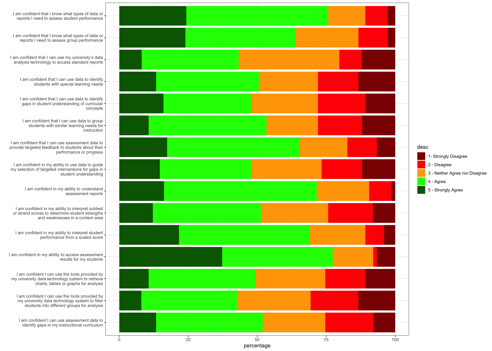
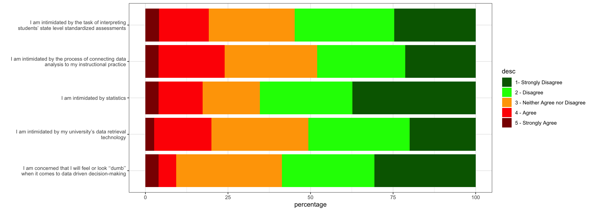
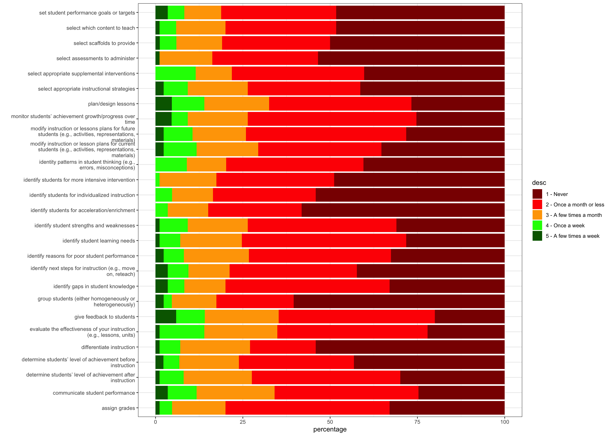

DLP Survey Analysis
Overall Agreement / Disagreement with Likert Statements


Confidence differences by experience, gender
Correlation between likerts and years of experience
| correlation | p value | |
|---|---|---|
| identity patterns in student thinking (e.g., errors, misconceptions) | 0.49705640 | 0.07803872 |
| determine students’ level of achievement before instruction | 0.63675139 | -0.05467134 |
| determine students’ level of achievement after instruction | 0.61029443 | -0.05939393 |
| monitor students’ achievement growth/progress over time | 0.19685527 | -0.14968287 |
| identify student strengths and weaknesses | 0.49555694 | -0.07936498 |
| select appropriate instructional strategies | 0.43138420 | -0.09158296 |
| select appropriate supplemental interventions | 0.83439517 | -0.02438227 |
| plan/design lessons | 0.06671338 | -0.21286753 |
| evaluate the effectiveness of your instruction (e.g., lessons, units) | 0.09356342 | -0.19504239 |
| group students (either homogeneously or heterogeneously) | 0.78101782 | -0.03263951 |
| identify reasons for poor student performance | 0.16352031 | -0.16254569 |
| select assessments to administer | 0.36095229 | -0.10698160 |
| identify students for more intensive intervention | 0.52612907 | -0.07434679 |
| identify students for acceleration/enrichment | 0.32085197 | -0.11619083 |
| identify students for individualized instruction | 0.15877813 | -0.16550084 |
| identify next steps for instruction (e.g., move on, reteach) | 0.48227794 | -0.08295195 |
| modify instruction or lessons plans for future students (e.g., activities, representations, materials) | 0.58815321 | -0.06397435 |
| modify instruction or lesson plans for current students (e.g., activities, representations, materials) | 0.74301554 | -0.03875879 |
| set student performance goals or targets | 0.92656496 | -0.01089950 |
| select which content to teach | 0.05595453 | -0.22318273 |
| differentiate instruction | 0.23322815 | -0.14027876 |
| select scaffolds to provide | 0.32865670 | -0.11594350 |
| identify student learning needs | 0.26467781 | -0.13133631 |
| communicate student performance | 0.63669423 | -0.05581415 |
| give feedback to students | 0.01683872 | -0.27710901 |
| assign grades | 0.64946991 | -0.05371065 |
| identify gaps in student knowledge | 0.15376149 | -0.16748979 |
| correlation | p value | |
|---|---|---|
| I am confident in my ability to access assessment results for my students | 0.83540931 | 0.025865548 |
| I am confident that I know what types of data or reports I need to assess group performance | 0.69156514 | 0.049368004 |
| I am confident that I know what types of data or reports I need to assess student performance | 0.52546471 | 0.079552207 |
| I am confident I can use the tools provided by my university data technology system to retrieve charts, tables or graphs for analysis | 0.65998469 | 0.054736286 |
| I am confident I can use the tools provided by my university data technology system to filter students into different groups for analysis | 0.04154901 | 0.249722193 |
| I am confident that I can use my university’s data analysis technology to access standard reports | 0.13587129 | 0.185518672 |
| I am confident in my ability to understand assessment reports | 0.55948185 | 0.073138702 |
| I am confident in my ability to interpret student performance from a scaled score | 0.52291574 | 0.080040895 |
| I am confident in my ability to interpret subtest or strand scores to determine student strengths and weaknesses in a content area | 0.96010537 | -0.006277079 |
| I am confident that I can use data to identify students with special learning needs | 0.53546726 | -0.077043411 |
| I am confident that I can use data to identify gaps in student understanding of curricular concepts | 0.66312177 | -0.054198703 |
| I am confident that I can use assessment data to provide targeted feedback to students about their performance or progress | 0.55060033 | -0.074214116 |
| I am confident I can use assessment data to identify gaps in my instructional curriculum | 0.47377402 | -0.089017579 |
| I am confident that I can use data to group students with similar learning needs for instruction | 0.50722627 | 0.082431460 |
| I am confident in my ability to use data to guide my selection of targeted interventions for gaps in student understanding | 0.10858377 | -0.197812201 |
| I am intimidated by statistics | 0.65651717 | -0.055331660 |
| I am intimidated by the task of interpreting students’ state level standardized assessments | 0.34169221 | -0.119835053 |
| I am concerned that I will feel or look ‘‘dumb’’ when it comes to data driven decision-making | 0.28462203 | -0.132638066 |
| I am intimidated by my university’s data retrieval technology | 0.56896860 | -0.070829644 |
| I am intimidated by the process of connecting data analysis to my instructional practice | 0.66543800 | -0.053802419 |